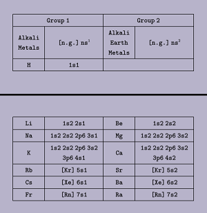
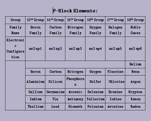

- Valence Shell: nth shell, 1st outer shell
- Penultimate Shell: (n-1)th shell, 2nd outer shell
- Pre-penultimate shell: (n-2)nd shell, 3rd outer shell
Hello, This is my first post here.
Classification of Elements and Periodicity.
Shells:
Various Classifications:
#1 Dobereiner:
- First person to classify elements on basis of their characteristics
- Triad law
- Formed groups of 3 elements each
- Based on Atomic Mass
- Didn't classified all elements (drawback)
#2 Newlands:
- Octave Law
- Characteristics of every eighth element is similar to that of the first element
- Based on Atomic Mass
- Worked fine only upto Calcium, i.e., valid only for lighter elements (drawback)
#3 Lothar Meyer:
- Based on Atomic Mass
- The elements having similar properties will occupy the same position in curve
- Halogens are the ascending part of the curve
- The atomic volume of the elements in a period initially decreases and then increases
#4 Mendeleev:
- Based on Atomic Mass
- First person to classify elements in form of a table; later known as Periodic table
- Predicted occurrence of 3 elements and left space for them in the periodic table:
- Eka-Boron: After Boron: Scandium
- Eka-Aluminium: After Aluminium: Gallium
- Eka-Silicon: After Silicon: Germanium
- Horizontal: Periods, & Vertical: Groups
- Arranged elements in increasing order of Atomic Mass
- Placed some heavier elements before some lighter elements (drawback); these are known as Mendeleev's Anomalous Pairs
- Anomalous Pairs: Ar & K, Te & I, Th & Pa, Co & Ni [Aamir Khan Teri Ichcha Thandi Pepsi Kyon Nahi]
#5 Modern Periodic Table:
- Given by Moseley
- Based on Atomic Number
- 18 Groups and 7 Periods
- Long Form of Periodic Table: When elements are arranged in modern periodic table in the form of electronic configuration, then it is called L.F.P.T - Given by Rang, Burner & Burrey
- Representive/Normal elements
- Transition elements
- Inner-transition elements
- Representive elements: s & p-block elements, (except group 18) - Valence shell is incomplete
- Transition elements: d-block elements - Penultimate shell is incomplete
- Inner-Transition elements: f-block elements - Penultimate & Pre-Penultimate shells are incomplete
# On the basis of electronic configuration, elements are of 3 types:
Representive Elements:
# s-block:
Those elements in which the last electron enters into the s-subshell of the valence shell are known as s-block elements.
- Position of s-block elements in L.F.P.T: Left hand side, 1st Period, and contains group 1 & 2
- g.e.c.f: ns1-2 
# p-block:
Those elements in which the last electron enters into the p-subshell of the valence shell are known as p-block elements.
- Position of p-block elements in L.F.P.T: Right hand side, starts from 1st period, spans from 13th to 18th group
- g.e.c.f: ns2 np1-6 
Transition Elements:
- Last electron enters into the d-subshell of penultimate shell.
- G.E.C.F: [noble gas] (n-1)d1-10 ns1-2
- Position: Middle, Starts from 4th Period & contains Group 3rd to 12th
- n = 4: 3d Series: Scandium to Zinc
- n = 5: 4d Series: Yttrium to Cadmium
- n = 6: 5d Series: Lanthanum → Lanthamoids → Hafnium → Mercury
- n = 7: 6d Series: Actinium → Actinoids → Rutherfordium → Copernicium

Inner - Transition Elements:
- G.E.C.F: [noble gas] (n-2)f1-14 (n-1)d0-1 ns2
- Pre-Penultimate (n-2) and Penultimate (n-1) shells are incomplete
- Last electron enters into f-subshell of Pre-Penultimate shell → f-block elements
- Position in L.F.P.T: Starts from 6th Period & contains 3rd (or IIIB) Group
- n = 6: 4f Series: 1st Inner-transition series: Lanthamoids: Cerium → Lutetium
- n = 7: 5f Series: 2nd Inner-transition series: Actinoids: Thorium → Lawrencium

Tricks:
# For Block:
- ns → s-block
- ns np → p-block
- (n-2)f (n-1)d ns → if d0-1: f-block; else d-block
# For Period:
- Period number = n (max. value of 'n')
- Exception: Palladium
# For Group:
- s-block: nsx → Group number: x
- p-block: nsx npy → Group number: 10 + x + y
- d-block: (n-1)dz nsx → Group number: z + x
- f-block: Always 3rd Group only
Characteristics of Elements:
# Along a Period:
- Atomic number increases one by one
- Number of electrons increases one by one
- Number of protons increases one by one
- Number of shells remain constant
- Number of valence electrons increases one by one
- Number of electrons between nucleus & valence shell remains constant
# Down a Group:
- Atomic number increases rapidly
- Number of electrons increases rapidly
- Number of protons increases rapidly
- Number of shells increases one by one
- Number of valence electrons remain constant
- Number of electrons between nucleus & valence shell increase rapidly
# Effective Nuclear Charge (Zeff):
The overall force of attraction of nucleus on the valence shell electron is known as Effective Nuclear Charge.
- Zeff = Z - (sigma)
Screening Effect (sigma):
- It is exerted by those electrons which are present between nucleus & valence-shell.
- Screening effect along Period: Constant or decreases due to number of electrons between Nucleus & Valence-shell.
- Screening effect down a group: Increases due to increase in number of electrons between Nucleus & Valence-shell.
PERIODIC PROPERTIES
#1 Atomic Radii:
- It is the distance between Nucleus and Valence-shell in ground state of the atom
# Types of Atomic Radii:
- Metallic Radius (for metals): 2r = Intermolecular distance = Bondlength rm = Metallic Bondlength / 2
- Co-valent Radius (for non-metals): rcov = CVBL / 2
- Vanderwalls Radius (for noble gases): rv
- rv > rm > rcov
# Factors affecting atomic radius:
- radius ∝ (number of shells)
- radius ∝ (1/Zeff)
- screening effect: r ∝ (σ)
- nature of bonding: rv > rm > rc
Periodicity:
- Along a Period: Atomic radius decreases due to increase in Zeff, but radius decreases upto halogens & is maximum in Noble gases
- Down a Group: Atomic radius increases due to decrease in Zeff
#2 Ionization Energy:
- Also known as Ionization Potential & Ionization Enthalpy
- Defined for 1 mole of atoms in ground & gaseous state
- Definition: Amount of energy required to remove an electron from the valence-shell of an atom present in ground & gaseous state
- Bond breaking is an Endothermic process
# Factors affecting Ionization Energy:
- number of shells: I. E. ∝ (1 / number of shells)
- Zeff: I. E. ∝ (Zeff)
- screening effect: I. E. ∝ (1 / σ)
- stability of sub-shells: I. E. ∝ (stability of half/fullfilled sub-shells)
- stability: p6 > d10 > p3 > d5
# Periodicity:
- Along a Period: I. E. increases due to increase in Zeff
- Down a Group: I. E. decreases due to decrease in Zeff

- Maximum I. E.: Noble Gases
- Minimum I. E.: Alkali Metals
- I. E1 of Alkali Earth Metals > I. E1 of Boron family
- I. E1 of Nitrogen family > I. E1 of Oxygen family
# Successive Ionization Energy:
- I. E1 < I. E2 < I. E3 … < I. En
#3 Electron Affinity:
- Defined for 1 mole of Gaseous atoms in ground state
- Definition: It is the amount of energy released when an electron is added in the Valence-shell of an atom present in ground & gaseous state
# Factors affecting Electron Affinity:
- number of shells: E.A. ∝ (1 / number of shells)
- Zeff: E. A. ∝ (Zeff)
- screening effect: E. A. ∝ (1 / Σ effect)
- nature of sub-shells: fullfilled: E. A. = 0 & halffilled: E. A. (nearly) = 0
# Periodicity:
- Along a Period: Increases due to increase in Zeff
- Down a group: Decreases due to decrease in Zeff
- Ex.: Li < B < C < O < F
[ Max. E. A. → Halogens ] - On going down a group E. A. decreases but in non-metals (15th, 16th, and 17th group), 3rd period elements' E. A. is greater than that of 2nd period elements due to small size & more valence electrons. So, more repulsion occurs on new in-coming electron
- Chlorine has the highest electron affinity
#4 Electronegativity:
- Relative property
- Bonded property
- Definition: The capacity to attract the bonded electrons by an atom in a molecule is called Electronegativity
# Factors affecting E. N.:
- number of shells: E. N. ∝ (1 / number of shells)
- Zeff: E. N. ∝ (Zeff)
- screening effect: E. N. ∝ (1 / Σ effect)
- oxidation state: E. N. ∝ (Oxidation number)
- hybridization: E. N. ∝ (% of s-character), E. N. ∝ (1 / Hybridization), sp > sp2 > sp3
# Periodic Trends:
- Along a Period: Electronegativity increases due to increase in Zeff
- Down a Group: Electronegativity decreases due to decrease in Zeff
- Most electronegative atom: Fluorine
# Polarizing Power (Φcation): (only for cations) (Ionic Potential)
- Definition: The capacity to polarize the anion is called polarization
- Φcation ∝ (Charge / Size)
- Φcation ∝ (Hydrational ion)
- Φcation ∝ (Hydra-energy)
- Φcation ∝ (Size of Hydrated Cation)
- Φcation ∝ (1 / Ionic Mobility)